2018
Mars
- 20 — Réflexions et pistes pour la BD
- 12 — Une soirée inattendue, court texte
- 12 — 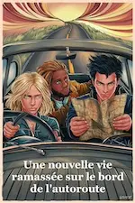 Une nouvelle vie ramassée sur le bord de l’autoroute, court texte
- 12 — SF SEX, court texte
- 12 — Pour le meilleur et pour le pire, court texte
- 12 — Chat érotique, court texte
- 12 — 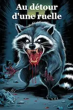 Au détour d’une ruelle, court texte
- 12 — À la piscine, court texte
- 04 — Défi dessin de mémoire
Février
- 26 — 🎶 アナと雪の女王 et 塔の上のラプンツェル
- 25 — 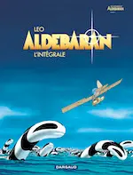 Projet bande dessinée
-
23 —
Défi 12 personnages de fantasy
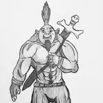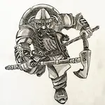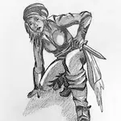
Janvier
- 07 — Les 折り紙
- 07 — 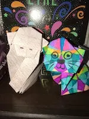 Mes premiers origami

 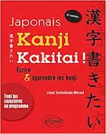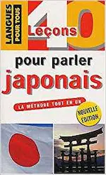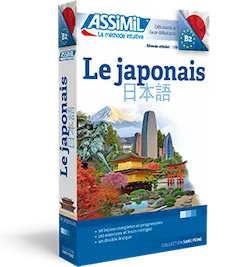
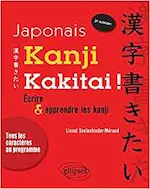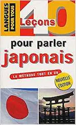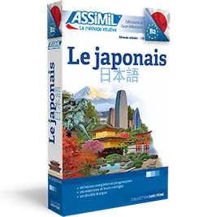